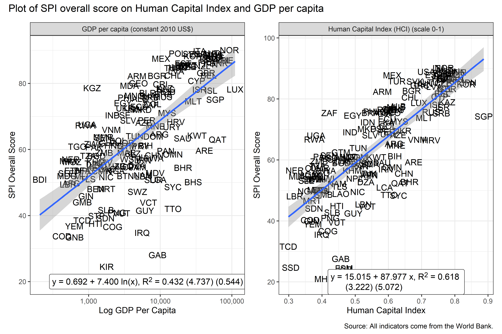
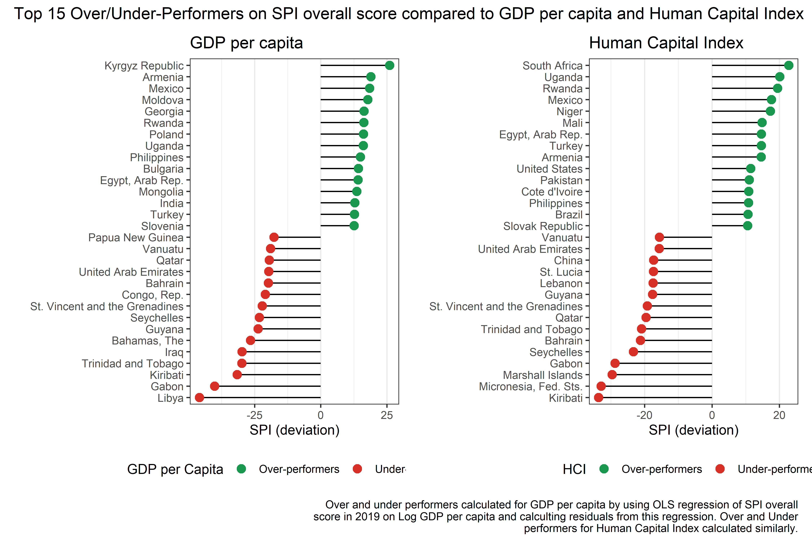
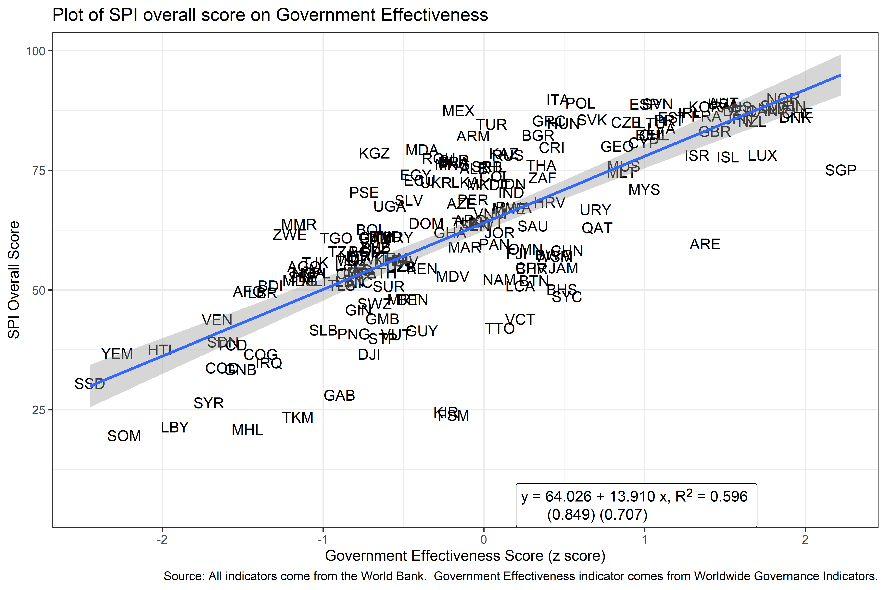
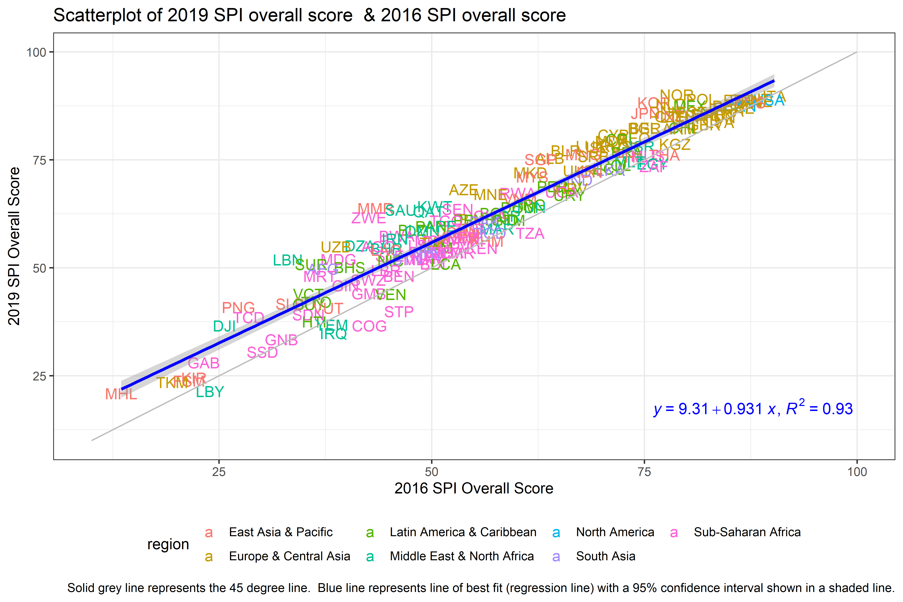

8 Analysis
8.1 Unique Values
As a check of the data, the number of unique scores for the SPI overall score is calculated. If the SPI overall score produces a large number of tied scores, for instance, then the index will be less able to distinguish between the statistical performance of countries. When calculating the number of unique values for 2023, it is found that there are 187 unique scores for 187 countries. This means there are 0 tied values.
When looking at each specific pillar, there are only 16 unique scores for pillar on data use. The data use indicator is coming solely from dimension 1.5 on data use by international organizations. For pillar, there are 169 unique scores. For pillar 3, there are 185 unique scores. There are 182 unique scores for pillar 4, and there are 18 unique scores for pillar 5.
8.2 Relationship to GDP Per Capita and the Human Capital Index
The correlation between the SPI overall score and and the log of GDP per capita and the World Bank’s Human Capital Index ((Bank 2020)) provide a face validity check between the SPI index and other outcomes. This analysis is not meant to assert a causal relationship, only to assess whether the SPI index is correlated with other outcomes in ways that might be expected. The source for GDP per capita comes from the World Bank’s World Development Indicators (WDI) database (NY.GDP.PCAP.KD). The GDP per capita numbers are in constant 2010 US$.
It would be expected that a strong positive relationship between GDP per capita of countries and their statistical system, as higher income countries would tend to have more resources available for statistical production. In fact, there is a strong relationship between the two. The correlation in 2022 between log GDP per capita and the SPI overall score is 0.51.6
Another measure of a country’s development is the Human Capital Index (HCI) developed by the World Bank ((Kraay 2019)). The Human Capital Index is designed to capture the amount of human capital a child born today can expect to attain by age 18 in a country. The index combines a country’s child mortality, learning adjusted years of schooling, adult survival rates & stunting into one index.7. Again, a strong positive relationship between a country’s HCI value and their Statistical Performance Indicators index might be expected, as countries with a more developed human capital stock are likely to have greater capacity to produce statistics. Again, this is what is seen. The correlation between the 2020 value of the HCI and the 2020 value of the SPI overall score is 0.75.
The scatter plot of the relationship between log GDP per capita, the HCI, and our SPI overall score for the years 2016-2020 is shown below. In general, countries with higher per capita income and higher levels of human capital tend to have better performing statistical systems according to the SPI measure.
Figure 7.1: Plot of SPI overall score on Human Capital Index and GDP per capita 
So as to highlight countries where this relationships do not hold as well, the next figure shows the 15 countries that most over-perform and the 15 countries that most under-perform on the SPI Index compared to their levels of GDP per capita and the Human Capital Index. A perfect fit between the SPI overall score and GDP per capita and the Human Capital Index is not to be expected, as countries differ in the resources put into their statistical system, even conditional on their levels of development. Highlighting outliers can sometimes be a useful exercise for determining whether a measure is identifying on the ground realities.
In order to produce this figure, an OLS regression of the SPI overall score in 2020 on log GDP per capita has been estimated.The residual, which can be interpreted as the difference between the country’s SPI overall score value and the expected index value based on their GDP per capita has then been calculated. Countries with values of the residual greater than zero are over-performing based on their GDP per capita and countries with residuals less than zero are under-performing. The corresponding figure for the Human Capital Index is calculated similarly.
This figure identifies some countries that appear to have better performing statistical systems than might be expected (Rwanda, Uganda, Egypt, Mexico, Philippines, Armenia and Turkey appear in green on both charts). There are also countries that appear to have poorer performing statistical systems than expected: there are several small island states for example that appear red on both charts.
Figure 7.2: Top 15 Over/Under-Performers on SPI overall score compared to GDP per capita in 2022 and Human Capital Index in 2020 
8.3 Relationship to Government Effectiveness
A common justification for improving statistical systems is that doing so can lead to better governance. Without good statistics, countries may be flying blind on where to target resources to improve the public welfare. Also, good statistics can help hold public officials accountable for progress toward reaching a country’s goals. In this next section, it is shown that the relationship between our SPI overall score and an estimate of government effectiveness produced by the Worldwide Governance Indicators (WGI) is analyzed. A strong relationship between the SPI measure of statistical performance and the WGI measure of governmental effectiveness is found.
(Kraay, Kaufmann, and Mastruzzi 2010) produce a set of Worldwide Governance Indicators, including a measure of government effectiveness. According to the WGI metadata, the government effectiveness indicator captures perceptions of the quality of public services, the quality of the civil service and the degree of its independence from political pressures, the quality of policy formulation and implementation, and the credibility of the government’s commitment to such policies. The estimate gives the country’s score on the aggregate indicator, in units of a standard normal distribution, i.e. ranging from approximately -2.5 to 2.5.8. The government effectiveness indicator is available from 1996 to 2022.
There is a strong relationship between the SPI overall score and the government effectiveness indicator. The correlation between the two in 2022 is 0.63. The scatterplot below shows the relationship between the SPI overall score and the government effectiveness indicator.
Figure 7.3: Plot of SPI overall score on Government Effectiveness in 2022 
To tease out to what extent the relationship between the government effectiveness indicator and the SPI is due to other factors such as income or regional characteristics, the results from an OLS regression are presented below. While it is acknowledged that a more detailed study could be conducted to better understand the processes relating the two, a relationship is found between government effectiveness and statistical performance after accounting for income and regional characteristics of a country.
The regression model used takes the following form:
\[ G_{ctr} = \alpha_t + \gamma_r + \beta SPI.INDEX_{ctr} + \theta X_{ctr} + \epsilon_{ctr} \]
where \(Y_{ctri}\) is the government effectiveness estimate for country i, in time period t, and region r. \(SPI.INDEX_{ctri}\) is the SPI overall score. \(X_{ctri}\) is a set of control variables in the regression. This includes log GDP per capita from the World Bank WDI. \(\epsilon_{ctri}\) is the error term. \(\alpha_t\) is an indicator variable for each year and \(\gamma_r\) is a regional indicator variable.
The table below shows the estimate of \(\beta\), the effect of the statistical performance measure on government effectiveness. Full results from this regression are shown in a table in the appendix. The estimated coefficient is statistically significant at the 0.1% level, and implies that a 10 point increase in the SPI overall score is associated with a 0.16 standard deviation increase in government effectiveness. For context, this 10 point jump in the SPI would roughly take a country from roughly the median in terms of government effectiveness to roughly the 58th percentile.
Table 7.1: Linear Regressions of Government Effectiveness Score on SPI Overall Score from 2016-19
Government Effectiveness | |
SPI Overall Score | 0.016 *** |
(0.001) | |
N | 1219 |
R2 | 0.829 |
*** p < 0.001; ** p < 0.01; * p < 0.05. | |
Source: World Bank. Statistical Performance Indicators. | |
8.4 Country Changes in the Index
In order to assess how stable the index values are over time, comparisons have been made between the index values in 2016 and the 2023 values. Overall, the SPI overall score is quite stable over time. The correlation between the 2016 value and the 2023 value is 0.91.
Figure 7.4: Scatterplot of 2023 SPI overall score & 2016 SPI overall score 
While the scores were relatively stable over time, some countries did see large improvements in their score from 2016-2023. The country that improved most on the index from 2016 to 2023 was Uzbekistan. Uzbekistan improved by 43.6 points out of 100. The table below shows the changes in the SPI overall score for the top 10 largest improvers.
Table 7.2: Top 10 Countries with Largest Changes from 2016-2023.
Country | SPI Overall Score 2023 | SPI Overall Score 2016 | Difference |
|---|---|---|---|
Uzbekistan | 80.3 | 36.7 | 43.6 |
Saudi Arabia | 81.5 | 40.7 | 40.8 |
United Arab Emirates | 77.6 | 47.0 | 30.6 |
Zimbabwe | 69.7 | 41.0 | 28.8 |
Chad | 56.4 | 28.5 | 27.9 |
Marshall Islands | 41.0 | 14.6 | 26.4 |
Lebanon | 58.2 | 32.4 | 25.8 |
Myanmar | 68.6 | 43.4 | 25.1 |
Singapore | 88.8 | 65.3 | 23.5 |
Burkina Faso | 72.3 | 49.1 | 23.2 |
Source: World Bank. Statistical Performance Indicators. | |||
To understand what effect taking the log has on this correlation, the correlation in 2022 between (non-logged) GDP per capita and the SPI overall score is 0.48.↩︎
For more details, visit the Human Capital Index website↩︎
Detailed documentation of the WGI, interactive tools for exploring the data, and full access to the underlying source data available at www.govindicators.org. The WGI are produced by Daniel Kaufmann (Natural Resource Governance Institute and Brookings Institution) and Aart Kraay (World Bank Development Research Group).↩︎